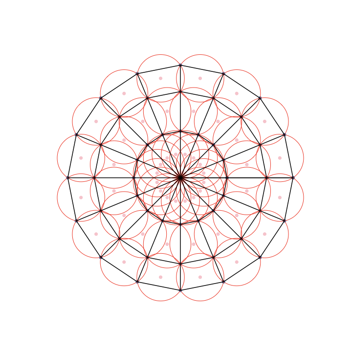
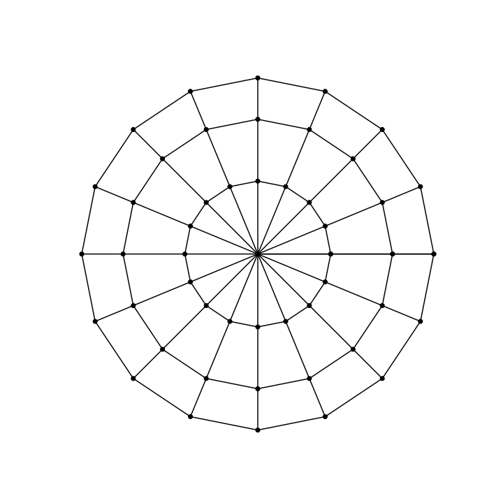
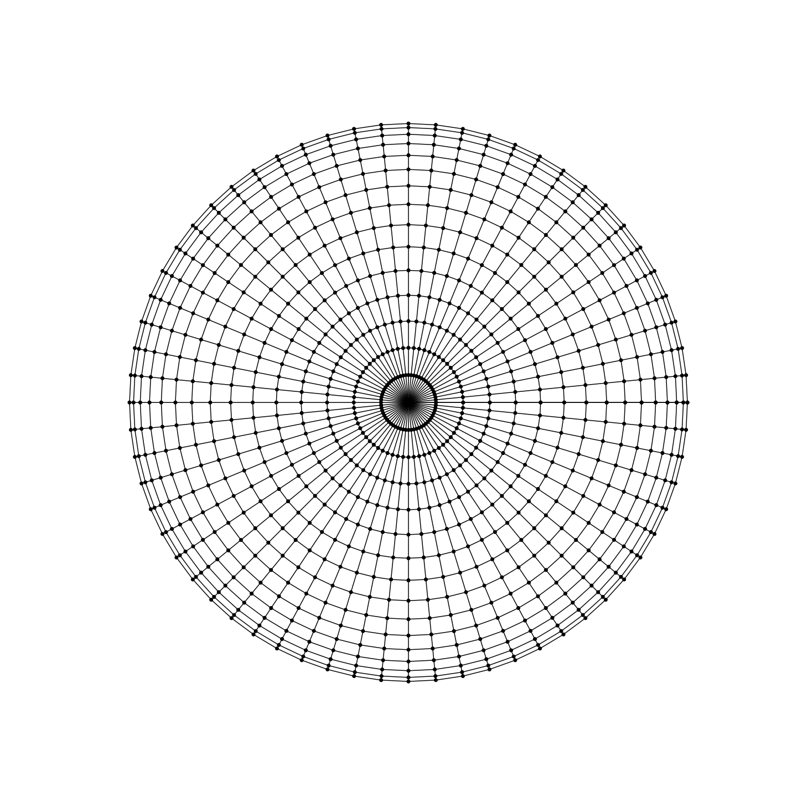
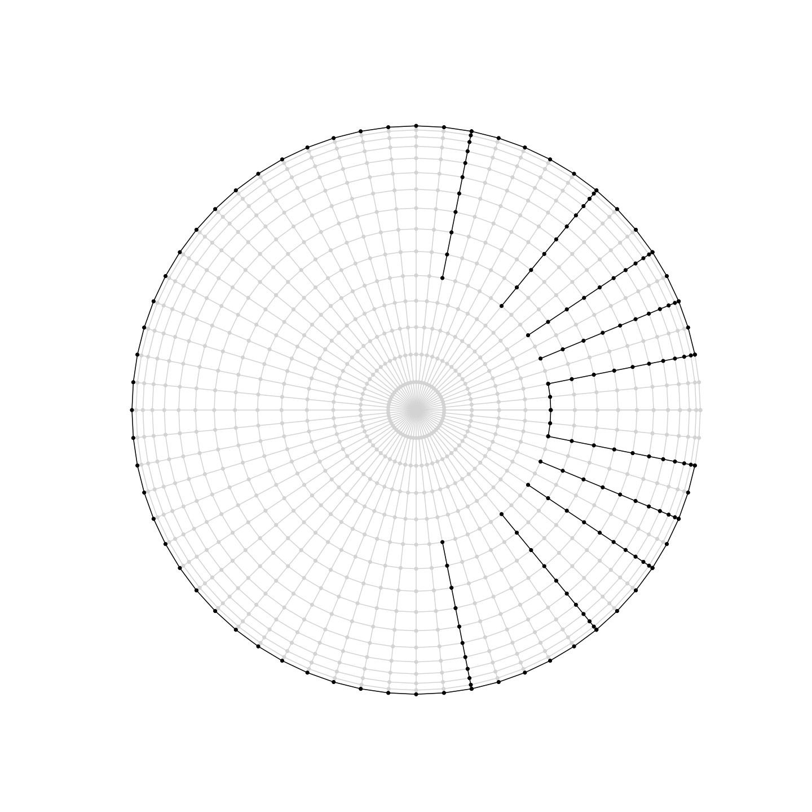
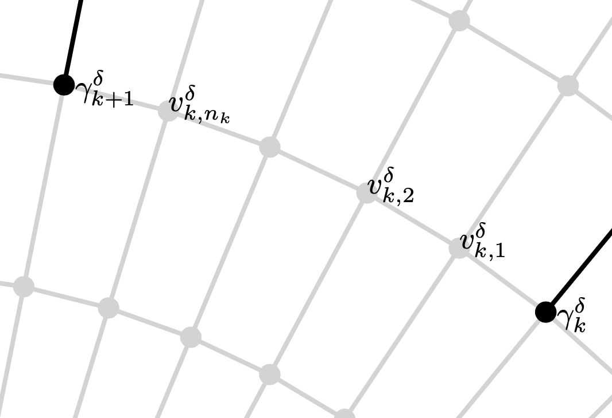
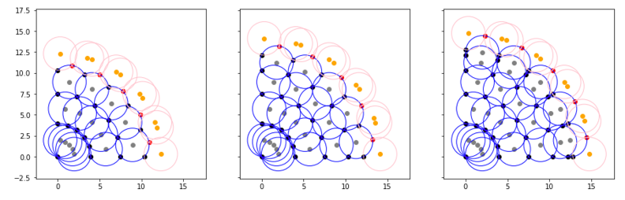
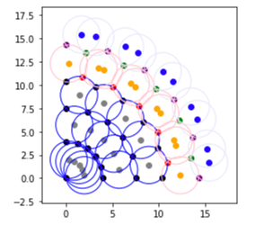
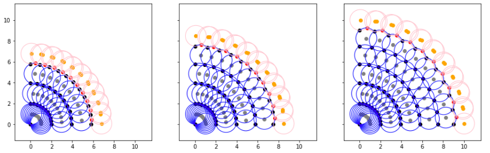
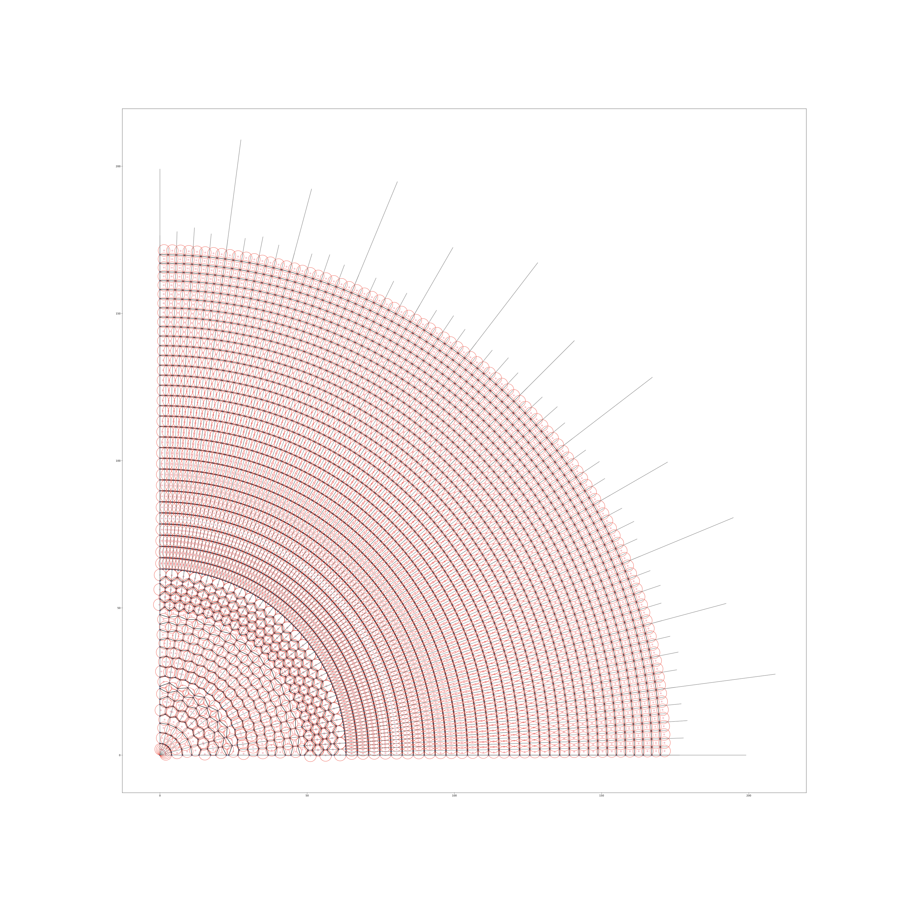

Discretization of a Harmonic Measure Problem and Spandrel:
From Sarason's Complex Analysis Roots to Isoradial Graphs
Abstract. It appears difficult to make precise estimates of the harmonic measure of certain starlike domains in the complex plane using classical geometric function theory alone. Starting from the classical complex-analytic foundations of starlike conformal maps, Poisson--Herglotz representations, and Pommerenke's radial slit product formula, we show how translating the continuum harmonic measure problem into a discrete random walk on a polar isoradial graph reveals a direct inductive coupling across adjacent angular channels. Using a discrete Kakutani--Markov argument on the four-neighbor polar lattice, we prove interior channel monotonicity (Lemma 2.2), boundary slit monotonicity (Lemma 2.3), and discrete channel harmonic measure monotonicity (Theorem 2.4). We then formalize the internal discrete complex analysis of Chelkak and Smirnov—establishing the dual-circle telescoping identity, the Discrete Mean Value Theorem, second-order Laplacian consistency with continuum harmonicity, and the $\varepsilon$-$\delta$ analytic--discrete proof transfer—to carry the discrete monotonicity theorem back to the continuum starlike slit domain. Finally, a spandrel problem about infinite dyadic polar isoradial starlike graphs arises.
1.Introduction and Continuum Complex-Analytic Roots
Let $\Omega$ be a slitted starlike domain in $\mathbb{C}$ with channels of monotone width, symmetric with respect to the real axis. Denoting $\mathbb{D} = \{z \in \mathbb{C} : |z| < 1\}$, an example is given by $f(\mathbb{D})$ for a Riemann map $f$ illustrated below.
The explicit formula \begin{equation}\label{eq:f} f(z) = z \prod_{j=1}^{2n}(1-\bar{z}_jz)^{-\sigma_j} \end{equation} for $f$ can be given; see [Pom, Thm 3.18]. The points $z_k$ correspond to angles $\sigma_k$ dependent on $\rho_k$, the slits' starting moduli. The symmetrical setup gives the following equations for $k = 2, 3, \dots, n$: \[ z_{2n+2-k} = \bar{z}_k, \qquad \sigma_{2n+2-k} = \sigma_k, \qquad \exp(it_{2n+1-k}) = \exp(-it_k), \qquad \rho_{2n+1-k} = \rho_k. \] If we require that $\rho_k = \rho_j$ for all $j,k$, we can prescribe either $\{z_k\}$ or $\{\sigma_k\}$, but their precise relationship is not obvious. Denote the arc lengths on the unit circle from $z_k$ to $z_{k+1}$ by \[ \{\omega_k = |(z_k,z_{k+1})|\}, \] and it follows that $\omega_k$ is the harmonic measure of the slit $R_k$ in $\Omega$. One natural question is the following.
We conjecture that the answer is yes, but a proof using classic geometric function theory eludes us.
In \eqref{eq:f}, the $2n$ boundary poles $z_j = e^{i\varphi_j}$ and the $2n$ exponents $\sigma_j$ determine the slit-tip preimages $e^{it_k} \in (z_k, z_{k+1})$ implicitly through $f'(e^{it_k}) = 0$, and then determine the starting moduli $\rho_k = |f(e^{it_k})|$ through the product $\prod_{j=1}^{2n} |1 - e^{-i\varphi_j} e^{it_k}|^{-\sigma_j}$. Requiring equal starting moduli $\rho_k = \rho_j$ couples all $2n$ arcs $(z_k, z_{k+1})$ into a global non-local system of transcendental equations. By contrast, when we discretize $\Omega$ by a polar isoradial graph $\Gamma^{\delta}$, the equal-modulus condition $\rho_k = 1$ becomes a local geometric symmetry of the discrete graph: every slit $(S_k)_{\Omega^{\delta}}$ starts on the exact same discrete circle $|v| = |\gamma_k^{\delta}| \approx 1$, allowing a direct step-by-step Markov comparison across adjacent channels.
/-- Section 1, Equation (1.1): Explicit Pommerenke product formula for `f : 𝔻 → Ω`. -/ noncomputable def riemannSlitMap_f (n : ℕ) (z_pt : ℕ → ℂ) (σ : ℕ → ℝ) (z : ℂ) : ℂ := z * ∏ j ∈ Finset.Icc 1 (2 * n), (1 - star (z_pt j) * z) ^ (-(σ j : ℂ)) structure PaperSection1SymmetricSlitSetup_eps (n : ℕ) where f : ℂ → ℂ φ : ℕ → ℝ z_pt : ℕ → ℂ σ : ℕ → ℝ t : ℕ → ℝ ρ : ℕ → ℝ hStarlike_theta : IsStarlikeOnDisk_theta_eps f hUnitCircle_z : ∀ k : ℕ, z_pt k = polarPoint 1 (φ k) hFormula_f : ∀ z ∈ unitDiskSet, f z = riemannSlitMap_f n z_pt σ z hSymm_z : ∀ k : ℕ, 2 ≤ k → k ≤ n → z_pt (2 * n + 2 - k) = star (z_pt k) hSymm_sigma : ∀ k : ℕ, 2 ≤ k → k ≤ n → σ (2 * n + 2 - k) = σ k hSymm_tip : ∀ k : ℕ, 2 ≤ k → k ≤ n → polarPoint 1 (t (2 * n + 1 - k)) = polarPoint 1 (-t k) hSymm_rho : ∀ k : ℕ, 2 ≤ k → k ≤ n → ρ (2 * n + 1 - k) = ρ k hEqualRho : ∀ j k : ℕ, ρ k = ρ j def paperSlitArcLength_omega {n : ℕ} (S : PaperSection1SymmetricSlitSetup_eps n) (k : ℕ) : ℝ := S.φ (k + 1) - S.φ k def Question_1_1_eps (n : ℕ) (S : PaperSection1SymmetricSlitSetup_eps n) : Prop := (∀ k : ℕ, 1 ≤ k → k < n → paperSlitArcLength_omega S k ≤ paperSlitArcLength_omega S (k + 1)) ↔ (∀ k : ℕ, 1 ≤ k → k < n → S.σ k ≤ S.σ (k + 1))
1.1.Polar-Angle Starlikeness and the Herglotz--Pommerenke Logarithmic Derivative
In polar coordinates $z = r e^{i\theta} = r(\cos\theta + i\sin\theta)$, a domain $\Omega \subset \mathbb{C}$ containing $0$ is starlike with respect to the origin if for every $r e^{i\theta} \in \Omega$ and every $t \in [0, 1]$, the scaled point $t r e^{i\theta}$ also lies in $\Omega$. For any collection of radial slits $R_j = \{r e^{i\theta_j} : r \ge \rho_j\}$ with strictly positive tip moduli $\rho_j > 0$, the complement $\Omega = \mathbb{C} \setminus \bigcup_{j=1}^{2n} R_j$ is starlike with respect to $0$. When $f = u + iv : \mathbb{D} \to \Omega$ is holomorphic with $f(0) = 0$ and $f(z) \ne 0$ for $z \in \mathbb{D} \setminus \{0\}$, the polar Cauchy--Riemann equations \begin{equation}\label{eq:polar-cr} u_\theta = -r v_r, \qquad v_\theta = r u_r \end{equation} govern the angular variation of $\arg f(re^{i\theta})$ along each circle $|z| = r \in (0, 1)$.
_eps Cauchy–Riemann & Herglotz theorems prove Theorem 1.2) and Level 3 (Lean 4 proofs in Sarason/Chapter3.lean).
_eps Roots
In Sarason/Definitions.lean and Sarason/Chapter2.lean, complex differentiability is built in Weierstrass $\varepsilon$-$\delta$ form (HasDerivAt_eps, HolomorphicOn_eps), from which hasDerivAt_eps_imp_cauchy_riemann derives $u_x = v_y, u_y = -v_x$ and exercise_II_6_3 derives the polar Cauchy–Riemann equations \eqref{eq:polar-cr}. In Sarason/Chapter3.lean (§III.13), argPolarDeriv_theta_eq_re_logDeriv proves \eqref{eq:arg-deriv}, and III_11_herglotz_properties proves that the Herglotz kernel herglotzKernel ζ z = (ζ + z)/(ζ - z) has positive real part on $\mathbb{D}$ and zero real part on $\partial\mathbb{D}$.
theorem argPolarDeriv_theta_eq_re_logDeriv (u v ux uy vx vy : ℝ × ℝ → ℝ) (p : ℝ × ℝ) (h_CR1 : ux (p.1 * Real.cos p.2, p.1 * Real.sin p.2) = vy (p.1 * Real.cos p.2, p.1 * Real.sin p.2)) (h_CR2 : uy (p.1 * Real.cos p.2, p.1 * Real.sin p.2) = -vx (p.1 * Real.cos p.2, p.1 * Real.sin p.2)) : let q : ℝ × ℝ := (p.1 * Real.cos p.2, p.1 * Real.sin p.2) let f_z : ℂ := (u q : ℂ) + (v q : ℂ) * I let f'_z : ℂ := (ux q : ℂ) + (vx q : ℂ) * I argPolarDeriv_theta u v ux uy vx vy p = ((polarPoint p.1 p.2 * f'_z) / f_z).re := by { intros q f_z f'_z unfold argPolarDeriv_theta polar_partial_theta polarPoint dsimp [q, f_z, f'_z] rw [h_CR1, h_CR2, Complex.div_re, Complex.normSq_apply] simp only [Complex.mul_re, Complex.mul_im, Complex.add_re, Complex.add_im, Complex.ofReal_re, Complex.ofReal_im, Complex.I_re, Complex.I_im] ring } theorem pommerenkeLogDeriv_re_pos_on_disk {m : ℕ} (hm : 0 < m) (ζ : Fin m → ℂ) (σ : Fin m → ℝ) (hζ : ∀ j, ζ j ∈ unitCircleSet) (hσ : ∀ j, 0 < σ j) : ∀ z ∈ unitDiskSet, 0 < (pommerenkeLogDeriv ζ σ z).re := by { intro z hz rw [pommerenkeLogDeriv_re] haveI : Nonempty (Fin m) := Fin.pos_iff_nonempty.mp hm apply Finset.sum_pos · intro j _ have h_herg := (III_11_herglotz_properties (hζ j)).2.1 z hz exact mul_pos (half_pos (hσ j)) h_herg · exact Finset.univ_nonempty } theorem pommerenkeLogDeriv_unitCircle_eq {m : ℕ} (φ σ : Fin m → ℝ) (t : ℝ) : pommerenkeLogDeriv (fun j => polarPoint 1 (φ j)) σ (polarPoint 1 t) = ((∑ j : Fin m, (σ j / 2) * (Real.sin (t - φ j) / (1 - Real.cos (t - φ j))) : ℝ) : ℂ) * I
1.2.Half-Angle Phase Jumps and the Channel Opening Angle Identity $\Delta\theta_k = \sigma_k\pi$
In Section 1, the exponents $\sigma_k$ appear in the product formula \eqref{eq:f}, whereas in Section 2 the domain $\Omega$ is defined by radial slits at angles $\theta_k$ with channel opening angles $\Delta\theta_k = \theta_{k+1} - \theta_k$. Theorem 1.3 proves from first principles—without assuming $\Delta\theta_k = \sigma_k\pi$ as an external axiom—that the linear $t$-dependence in $\arg f(e^{it})$ cancels via $\sum \sigma_j = 2$, and that crossing the pole $z_k = e^{i\varphi_k}$ flips the sign of $\sin((t-\varphi_k)/2)$ only in the $k$-th factor, producing the jump $\theta_{k+1} - \theta_k = \sigma_k\pi$.
theorem one_sub_polarPoint_eq_pos_halfAngle (α : ℝ) : 1 - polarPoint 1 α = polarPoint (2 * Real.sin (α / 2)) ((α - Real.pi) / 2) theorem pommerenkeArcPhase_eq_slitAngle (m k : ℕ) (φ σ : ℕ → ℝ) (h_sum : ∑ j ∈ Finset.range m, σ j = 2) (t : ℝ) : pommerenkeArcPhase m k φ σ t = pommerenkeSlitAngle m k φ σ theorem pommerenkeSlitAngle_succ_sub_eq_sigma_mul_pi (m k : ℕ) (φ σ : ℕ → ℝ) (hk : k < m) : pommerenkeSlitAngle m (k + 1) φ σ - pommerenkeSlitAngle m k φ σ = σ k * Real.pi := by { unfold pommerenkeSlitAngle pommerenkeArcPhase rw [zero_add, zero_add, ← Finset.sum_sub_distrib] have h_congr : ∑ j ∈ Finset.range m, (pommerenkeFactorPhase (φ j) (σ j) 0 (decide (k + 1 ≤ j)) - pommerenkeFactorPhase (φ j) (σ j) 0 (decide (k ≤ j))) = ∑ j ∈ Finset.range m, (if j = k then σ j * Real.pi else 0) := by { apply Finset.sum_congr rfl intro j _ exact pommerenkeFactorPhase_jump k j (φ j) (σ j) 0 } rw [h_congr, Finset.sum_ite_eq', if_pos (Finset.mem_range.mpr hk)] } theorem pommerenkeSlitAngle_diff_monotone_iff_sigma_monotone (m k : ℕ) (φ σ : ℕ → ℝ) (hk : k + 1 < m) : pommerenkeSlitAngle m (k + 1) φ σ - pommerenkeSlitAngle m k φ σ ≤ pommerenkeSlitAngle m (k + 2) φ σ - pommerenkeSlitAngle m (k + 1) φ σ ↔ σ k ≤ σ (k + 1) := by { have hk0 : k < m := Nat.lt_of_succ_lt hk rw [pommerenkeSlitAngle_succ_sub_eq_sigma_mul_pi m k φ σ hk0, pommerenkeSlitAngle_succ_sub_eq_sigma_mul_pi m (k + 1) φ σ hk] exact mul_le_mul_iff_of_pos_right Real.pi_pos }
1.3.Conformal Pullback of Slit and Channel Harmonic Measures
SlitHarmonicMeasure.lean).
Proposition 1.4 highlights how the conformal map $f : \mathbb{D} \to \Omega$ folds each arc $(z_k, z_{k+1})$ at the critical point $e^{it_k}$ onto the two sides $R_k^-$ and $R_k^+$ of the radial slit $R_k$. Meanwhile, the $k$-th channel $C_k$ is bounded by the upper bank $R_k^+$ of slit $k$ and the lower bank $R_{k+1}^-$ of slit $k+1$.
theorem analyticSlitHarmonicMeasure_eq_bank_sum_eps {m : ℕ} (C : AnalyticOrderedSlitConfiguration_eps m) (k : ℕ) : analyticSlitHarmonicMeasure_eps C k = analyticLowerBankHarmonicMeasure_eps C k + analyticUpperBankHarmonicMeasure_eps C k := by { unfold analyticSlitHarmonicMeasure_eps analyticLowerBankHarmonicMeasure_eps analyticUpperBankHarmonicMeasure_eps diskArcHarmonicMeasureOrigin ring } theorem analytic_monotone_slit_of_bank_monotonicity_eps {m : ℕ} (C : AnalyticOrderedSlitConfiguration_eps m) (k : ℕ) (hLower : analyticLowerBankHarmonicMeasure_eps C k ≤ analyticLowerBankHarmonicMeasure_eps C (k + 1)) (hUpper : analyticUpperBankHarmonicMeasure_eps C k ≤ analyticUpperBankHarmonicMeasure_eps C (k + 1)) : analyticSlitHarmonicMeasure_eps C k ≤ analyticSlitHarmonicMeasure_eps C (k + 1) := by { rw [analyticSlitHarmonicMeasure_eq_bank_sum_eps C k, analyticSlitHarmonicMeasure_eq_bank_sum_eps C (k + 1)] exact add_le_add hLower hUpper }
2.Discretization on Polar Isoradial Graphs
For convenience let us reflect $\Omega$ about the imaginary axis and make the slits start on the unit circle. For symmetric slits \begin{equation} S_k = \{ re^{\pm i \theta_k} : r \ge 1\} \end{equation} satisfying $\theta_0 = 0 < \theta_1 < \theta_2 < \dots < \theta_N$ with $(\theta_k - \theta_{k-1}) \leq (\theta_{k+1} - \theta_k)$ for all $k = 1, \dots, N-1$, define \begin{equation} \Omega = \mathbb{C} \setminus \left( \bigcup_{k=0}^N S_k \right), \qquad C_k = \{ re^{\pm i \theta} : r > 1,\; \theta_k < \theta < \theta_{k+1}\}. \end{equation} Following [CS], for each $\delta > 0$, we define an isoradial graph $\Gamma^{\delta}$ to approximate compact subsets of $\Omega$. An isoradial graph is planar and consists of faces that are all inscribed in circles of the same radius $\delta$. We may assume $\delta^2 = 2\pi/ m$ for some integer $m$. The vertices along rays spaced by $\Delta \theta = \delta^2$ can extend to radius $1/\delta$, creating graphs that fill $\Omega$ as $\delta$ tends to $0$.
Specifying the moduli of the vertices, we begin with $r_0 = 0$. The isoradial property determines the recursive formula for $r_j = r_j(\delta)$: \begin{equation}\label{eq:rmoduli} r_{j+1} = r_j\cos(\pi/m) + \sqrt{(r_j\cos(\pi/m))^2 - r_j^2 + \delta^2}, \end{equation} which gives the moduli of the circle centers of the graph faces for odd indices, and the moduli of the vertices for even indices $\{r_{2n}\}$. Thus we have the vertices \begin{equation} V(\Gamma^{\delta}) = \{ r_j e^{i\ell\delta^2} : \ell = 1, \dots, m, \quad r_j \in \{r_{2n}\} \}. \end{equation}



In a polar grid with $m$ rays spaced by $\Delta\theta = 2\pi/m = \delta^2$, two adjacent rays at radius $r_j$ have chordal distance $2 r_j \sin(\pi/m)$. For a rhombic circumcircle of radius $\delta$ to pass through both points, the chord cannot exceed the circle diameter $2\delta$. Proposition 2.1 shows that the radicand in \eqref{eq:rmoduli} is $\delta^2 - r_j^2\sin^2(\pi/m)$, so as $\delta \to 0$ the outer boundary $r_{\max}^\delta \approx 1/\delta \to \infty$ automatically exhausts $\Omega$.
theorem slitDomain_Omega_isStarlike_theta (N : ℕ) (θ : ℕ → ℝ) : IsStarlikeDomain_theta (slitDomain_Omega N θ) noncomputable def isoradialModulusStep (m : ℕ) (δ r_j : ℝ) : ℝ := r_j * Real.cos (Real.pi / (m : ℝ)) + Real.sqrt ((r_j * Real.cos (Real.pi / (m : ℝ))) ^ 2 - r_j ^ 2 + δ ^ 2) theorem isoradial_discriminant_identity (m : ℕ) (δ r_j : ℝ) : (r_j * Real.cos (Real.pi / (m : ℝ))) ^ 2 - r_j ^ 2 + δ ^ 2 = δ ^ 2 - r_j ^ 2 * Real.sin (Real.pi / (m : ℝ)) ^ 2 := by { have h_pyth := Real.cos_sq_add_sin_sq (Real.pi / (m : ℝ)) linear_combination r_j ^ 2 * h_pyth }
For every slit tip $e^{i\theta_k}$ there exists a nearest vertex $\gamma_k^{\delta} \in V(\Gamma^{\delta})$ such that $\gamma_k^{\delta} \to e^{i\theta_k}$ as $\delta \to 0$. The discrete slit and discrete channels are \[ (S_k)_{\Omega^{\delta}} = \{ v \in V(\Gamma^{\delta}) : \arg v = \arg \gamma_k^{\delta},\; |v| \ge |\gamma_k^{\delta}|\}, \] \[ (C_k)_{\Omega^{\delta}} = \bigcup_{\ell = 1}^{n_k^\delta} \{ v \in V(\Gamma^{\delta}) : \arg v = \arg v_{k,\ell}^{\delta}, \quad |v_{k,\ell}^{\delta}| \leq |v| < r^{\delta}_{\text{max}}\}, \] where $n_k^{\delta} = \lfloor (\theta_{k+1} - \theta_k)/\delta^2 \rfloor \le n_{k+1}^{\delta}$ measures the discrete channel width. Our discrete domain $\Omega_{\Gamma}^{\delta}$ has interior $\operatorname{int}\Omega_{\Gamma}^{\delta} = (\mathbb{D}^{\delta} \setminus \{\gamma_k^{\delta}\}) \cup \bigcup_k (C_k)_{\Omega^{\delta}}$ and boundary $\partial\Omega_{\Gamma}^{\delta} = \{\gamma_k^{\delta}\} \cup \{(S_k)_{\Omega^{\delta}} : n_k^{\delta} \ne 0\} \cup \{v : \arg v = \arg v_{k,\ell}^{\delta},\; |v| = r_{\max}^{\delta}\}$.


2.1.Random Walk and Kakutani--Markov Monotonicity
As in [CS, p. 1593], we define a random walk $RW$ on $\Omega_{\Gamma}^{\delta}$ starting at $RW(0) = 0$, where $RW(t+1) = RW(t) + \xi_{RW(t)}$ and for the neighbors $u_j$ of an interior vertex $v$ with rhombic half-angles $\theta_j$, \begin{equation}\label{eq:angles} \mathbf{P}(\xi_v = u_k - v) = \frac{\tan \theta_k}{\sum_j \tan \theta_j}. \end{equation} For the channel boundary $\partial (C_k)_{\Omega^{\delta}} = \{ v \in \partial \Omega_{\Gamma}^{\delta} : (v,u) \in E(\Gamma^{\delta}),\; u \in (C_k)_{\Omega^{\delta}} \}$, we aim to establish \begin{equation}\label{eq:channel-monotone} \omega^{\delta}(0 ; \partial (C_k)_{\Omega^{\delta}}; \Omega^{\delta}_{\Gamma}) \le \omega^{\delta}(0 ; \partial (C_{k+1})_{\Omega^{\delta}}; \Omega^{\delta}_{\Gamma}). \end{equation}
lemma_2_1_full_induction_R).
In the paper proof of Lemma 2.2, rotational symmetry gives equality of the four transition weights except at the left boundary ray $\ell = n_k < n_{k+1}$, where the absorbing slit sets $M_{l,k} = 0$ in channel $k$ while $M_{l,k+1} > 0$ in channel $k+1$. In Lean 4, both cases are unified into the single linear inequality hBoundaryL : ml_k ≤ ml_k1 with 0 ≤ ml_k1 and 0 ≤ pl_k, allowing mul_le_mul and linarith to verify both the direct and reflected steps cleanly over $\mathbb{R}$.
theorem lemma_2_1_direct_step_R (ml_k ml_k1 mr mu md : ℝ) (pl_k pr_k pu_k pd_k : ℝ) (pl_k1 pr_k1 pu_k1 pd_k1 : ℝ) (h_ml_nonneg : 0 ≤ ml_k1) (h_mr_nonneg : 0 ≤ mr) (h_mu_nonneg : 0 ≤ mu) (h_md_nonneg : 0 ≤ md) (h_pl_nonneg : 0 ≤ pl_k) (hWeightL : ml_k ≤ ml_k1) (hProbL : pl_k ≤ pl_k1) (hProbR : pr_k ≤ pr_k1) (hProbU : pu_k ≤ pu_k1) (hProbD : pd_k ≤ pd_k1) : markovFourTermStep_R ml_k mr mu md pl_k pr_k pu_k pd_k ≤ markovFourTermStep_R ml_k1 mr mu md pl_k1 pr_k1 pu_k1 pd_k1 := by { unfold markovFourTermStep_R have h1 : ml_k * pl_k ≤ ml_k1 * pl_k1 := mul_le_mul hWeightL hProbL h_pl_nonneg h_ml_nonneg have h2 : mr * pr_k ≤ mr * pr_k1 := mul_le_mul_of_nonneg_left hProbR h_mr_nonneg have h3 : mu * pu_k ≤ mu * pu_k1 := mul_le_mul_of_nonneg_left hProbU h_mu_nonneg have h4 : md * pd_k ≤ md * pd_k1 := mul_le_mul_of_nonneg_left hProbD h_md_nonneg linarith } theorem lemma_2_1_full_induction_R (W : CoupledChannelWalk_R) (t : ℕ) : probChannelK_R W t ≤ min (probChannelDirect_R W t) (probChannelRefl_R W t) := by { induction t with | zero => simp [probChannelK_R, probChannelDirect_R, probChannelRefl_R] | succ step _ => rw [le_min_iff] constructor · exact lemma_2_1_direct_step_R ... · exact lemma_2_1_reflected_step_R ... }
At the slit vertex $\gamma_k^{\delta}$, the right neighbor is $v^{\delta}_{k-1,n_{k-1}}$ (the last ray of channel $k-1$) and the left neighbor is $v^{\delta}_{k,1}$ (the first ray of channel $k$). Setting $\ell = 1$ in the reflected bound of Lemma 2.2 compares $v^{\delta}_{k-1,n_{k-1}}$ to $v^{\delta}_{k,n_k}$, while setting $\ell = 1$ in the direct bound compares $v^{\delta}_{k,1}$ to $v^{\delta}_{k+1,1}$. Then discrete_channel_harmonic_measure_monotone_R combines termwise ray dominance on $\{1, \dots, n_k^\delta\}$ with subset inclusion $\{1, \dots, n_k^\delta\} \subseteq \{1, \dots, n_{k+1}^\delta\}$ of non-negative probabilities.
theorem lemma_2_2_slit_boundary_monotonicity_R (mRight mLeft mUp mDown : ℝ) (p_km1_last p_k_last p_k_first p_kp1_first pUp_k pUp_kp1 pDown_k pDown_kp1 : ℝ) (hmR : 0 ≤ mRight) (hmL : 0 ≤ mLeft) (hmU : 0 ≤ mUp) (hmD : 0 ≤ mDown) (hRightChannel : p_km1_last ≤ p_k_last) (hLeftChannel : p_k_first ≤ p_kp1_first) (hUp : pUp_k ≤ pUp_kp1) (hDown : pDown_k ≤ pDown_kp1) : markovFourTermStep_R mRight mLeft mUp mDown p_km1_last p_k_first pUp_k pDown_k ≤ markovFourTermStep_R mRight mLeft mUp mDown p_k_last p_kp1_first pUp_kp1 pDown_kp1 theorem discrete_channel_harmonic_measure_monotone_R (n_k n_k1 : ℕ) (p_k p_k1 : ℕ → ℝ) (hWidth : n_k ≤ n_k1) (hNonneg : ∀ ℓ : ℕ, 0 ≤ p_k1 ℓ) (hRayDom : ∀ ℓ ∈ Finset.Icc 1 n_k, p_k ℓ ≤ p_k1 ℓ) : discreteChannelHarmonicMeasure_R n_k p_k ≤ discreteChannelHarmonicMeasure_R n_k1 p_k1 := by { unfold discreteChannelHarmonicMeasure_R have h_step1 : ∑ ℓ ∈ Finset.Icc 1 n_k, p_k ℓ ≤ ∑ ℓ ∈ Finset.Icc 1 n_k, p_k1 ℓ := Finset.sum_le_sum hRayDom have h_sub : Finset.Icc 1 n_k ⊆ Finset.Icc 1 n_k1 := Finset.Icc_subset_Icc_right hWidth have h_step2 : ∑ ℓ ∈ Finset.Icc 1 n_k, p_k1 ℓ ≤ ∑ ℓ ∈ Finset.Icc 1 n_k1, p_k1 ℓ := Finset.sum_le_sum_of_subset_of_nonneg h_sub (fun ℓ _ _ => hNonneg ℓ) exact le_trans h_step1 h_step2 }
3.Chelkak--Smirnov Discrete Complex Analysis and Analytic--Discrete Proof Transfer
To transfer the discrete random-walk monotonicity \eqref{eq:disc-channel-sum} back to the continuum starlike domain $\Omega$, we formalize the internal discrete complex analysis of Dmitry Chelkak and Stanislav Smirnov [CS] on isoradial graphs.
3.1.Dual-Circle Telescoping and the Discrete Mean Value Theorem
At an interior vertex $v \in \mathbb{C}$ of $\Gamma^{\delta}$ with neighbors $u_1, \dots, u_d \in \mathbb{C}$ and dual rhombic circumcenters $w_1, \dots, w_d \in \mathbb{C}$ ($w_0 := w_d$, $|w_k - v| = \delta$), each primal edge $u_k - v$ is orthogonal to the dual chord $w_k - w_{k-1}$ via $(\tan\theta_k)(u_k - v) = -i(w_k - w_{k-1})$. Summing around the closed dual cycle $\sum_{k=1}^d (w_k - w_{k-1}) = 0$ yields the exact first-order cancellation $\sum_{k=1}^d \tan\theta_k\,(u_k - v) = 0$.
On a general polar grid where radial step sizes $r_{2n+2} - r_{2n}$ vary with $r$, an unweighted random walk has radial drift. Chelkak and Smirnov's tangent weights $\tan\theta_k / W_{\tan}(v)$ convert each primal displacement $(\tan\theta_k)(u_k - v)$ into $-i(w_k - w_{k-1})$, which telescopes to $0$ around the closed dual cycle of circumcenters. Thus $\mathbf{E}[\xi_v] = 0$, every affine function is an exact discrete harmonic function, and harmonicity $\Delta^\delta H = 0$ is equivalent to the Discrete Mean Value Property $H(v) = (M^\delta H)(v)$.
theorem isoradialStar_weighted_displacement_sum_eq_zero {d : ℕ} (S : IsoradialVertexStar d) : ∑ k : Fin d, (((Real.tan (S.theta k) : ℝ) : ℂ) * (S.u k - S.v)) = 0 := by { have h_congr : ∑ k : Fin d, (((Real.tan (S.theta k) : ℝ) : ℂ) * (S.u k - S.v)) = ∑ k : Fin d, (-I * (S.w_next k - S.w_prev k)) := by { apply Finset.sum_congr rfl intro k _ exact S.hDualOrthog k } rw [h_congr, ← Finset.mul_sum, S.hDualCycle, mul_zero] } theorem isDiscreteHarmonicAt_iff_meanValueProperty {d : ℕ} (S : IsoradialVertexStar d) (H : ℂ → ℝ) : IsDiscreteHarmonicAt S H ↔ H S.v = isoradialDiscreteMeanValue S H := by { unfold IsDiscreteHarmonicAt rw [isoradialDiscreteLaplacian_eq_meanValue_diff] have h_ratio_pos : 0 < isoradialStarTotalTan S / isoradialStarAreaWeight S := div_pos S.hTanSumPos S.hAreaPos rw [mul_eq_zero, or_iff_right (ne_of_gt h_ratio_pos), sub_eq_zero, eq_comm] }
3.2.Second-Order Laplacian Consistency and Analytic--Discrete Proof Transfer
IsRealHarmonicOn_eps, so $h_{xx} + h_{yy} = 0$), then $T_2$ satisfies the exact Discrete Mean Value Property $T_2(v) = (M^{\delta} T_2)(v)$ and $(\Delta^{\delta} h)(v) = (\Delta^{\delta}(h - T_2))(v) \to 0$ as $\delta \to 0$. Consequently, under the Chelkak--Smirnov ($\delta \to 0$) and Beurling--Nevanlinna ($R = \|w\| \to \infty$) convergence bridge, monotone channel angles $\Delta\theta_k \le \Delta\theta_{k+1}$ ($\iff \sigma_k \le \sigma_{k+1}$) imply continuum channel monotonicity $\omega(0; \partial C_k; \Omega) \le \omega(0; \partial C_{k+1}; \Omega)$ (MonotoneChannelStatement_eps), and under bank monotonicity imply $\omega(0; R_k; \Omega) \le \omega(0; R_{k+1}; \Omega)$ (MonotoneSlitStatement_eps).
IsRealHarmonicOn_eps, HasLimitAt_eps, and HasLimitAtInf_eps complete the transfer) and Level 3 (Lean 4 proofs of Theorem 3.2).
IsRealHarmonicOn_eps to the Discrete Laplacian and $\varepsilon$-$\delta$ Proof Transfer
In SlitHarmonicMeasure.lean, isoradialDiscreteLaplacian_secondOrderTaylorAt decomposes the quadratic terms of $T_2(u_k) - T_2(v)$ into the trace part $\frac{1}{4}(h_{xx} + h_{yy})|u_k - v|^2$ (which integrates against $\tan\theta_k$ to $(h_{xx} + h_{yy})\mu_{\Gamma}(v)$) and the traceless harmonic polynomials $\Delta x_k^2 - \Delta y_k^2$ and $\Delta x_k \Delta y_k$ (which vanish by quadratic balance). When $h$ satisfies IsRealHarmonicOn_eps, $h_{xx} + h_{yy} = 0$, so $T_2$ satisfies the exact Discrete Mean Value Property and $\Delta^\delta h = \Delta^\delta(h - T_2) \to 0$. Chaining chelkak_smirnov_analytic_discrete_transfer_eps ($\delta \to 0$) with analytic_monotone_channel_of_hasLimitAtInf_eps ($R \to \infty$) proves monotoneChannelStatement_eps_proven.
theorem isoradialDiscreteLaplacian_secondOrderTaylorAt {d : ℕ} (S : IsoradialVertexStar d) (hBal : IsQuadraticallyBalancedStar S) (h₀ hx hy hxx hxy hyy : ℝ) : isoradialDiscreteLaplacian S (secondOrderTaylorAt S.v h₀ hx hy hxx hxy hyy) = hxx + hyy theorem isRealHarmonicOn_eps_imp_discreteMeanValue_and_remainder {d : ℕ} (S : IsoradialVertexStar d) (hBal : IsQuadraticallyBalancedStar S) {h : ℂ → ℝ} {G : Set ℂ} (hHarm : IsRealHarmonicOn_eps h G) (hv : S.v ∈ G) (hxy : ℝ) : ∃ (ux uy uxx uyy : ℝ × ℝ → ℝ), let pv := (S.v.re, S.v.im) let T₂ := secondOrderTaylorAt S.v (h S.v) (ux pv) (uy pv) (uxx pv) hxy (uyy pv) uxx pv + uyy pv = 0 ∧ IsDiscreteHarmonicAt S T₂ ∧ T₂ S.v = isoradialDiscreteMeanValue S T₂ ∧ isoradialDiscreteLaplacian S h = isoradialDiscreteLaplacian S (fun z => h z - T₂ z) theorem monotoneChannelStatement_eps_proven {m : ℕ} (C : AnalyticOrderedSlitConfiguration_eps m) (B : IsoradialContinuumBridge_eps C) (N : ℕ) : MonotoneChannelStatement_eps C N
4.A Spandrel Problem on Infinite Dyadic Polar Isoradial Graphs
We use the term spandrel in the sense of evolutionary biology, rather than architecture. A question unimportant to the original goal of research, but curious in its own right, arose while we wrote code in Python and Sagemath to produce images of isoradial graphs. We were unable to find an algorithm that could generate an infinite graph fitting the appropriate starlike property. Given $\delta > 0$, we define an infinite dyadic polar isoradial starlike graph to be an isoradial graph $\Gamma^{\delta}$ with the following properties:
- (Dyadic) $v \in V(\Gamma^{\delta})$ implies $\arg v = 2\pi / 2^n$ for some integer $n$;
- (Starlike) $re^{i\theta} \in V(\Gamma^{\delta})$ implies $r' e^{i\theta} \in V(\Gamma^{\delta})$, where $r' = r \cos(\pi/m) + \sqrt{(r \cos(\pi/m))^2 - r^2 + \delta^2}$;
- (Infinite) for all $r > 0$, there exists $v \in V(\Gamma^{\delta})$ such that $|v| > r$.
We conjecture the answer is no, mostly because we failed to produce one. If $N(r)$ is the number of vertices on the polar graph with modulus $r$, a successful one would double $N$ at every modulus in a cleverly chosen sequence $\{r_k\}$, which seems to be subject to too many constraints to exist. Below are some images created by our algorithms.
Question_2_3_Spandrel).
By Proposition 2.1, a polar isoradial graph with fixed angular count $m = 2^n$ cannot extend past $r_{\max}^\delta = \delta / \sin(\pi / 2^n)$ because the discriminant $\delta^2 - r^2\sin^2(\pi / 2^n)$ becomes negative. To reach $r \to \infty$ with fixed rhombic radius $\delta$, the graph must repeatedly double its angular resolution $2^n \mapsto 2^{n+1}$ at transition circles while preserving isoradiality of all intermediate faces.
def IsInfiniteDyadicPolarIsoradialStarlikeGraph (m : ℕ) (δ : ℝ) (V_Gamma : Set ℂ) : Prop := (∀ v ∈ V_Gamma, ∃ n : ℤ, arg v = (2 * Real.pi) / (2 : ℝ) ^ n) ∧ (∀ r θ : ℝ, polarPoint r θ ∈ V_Gamma → polarPoint (isoradialModulusStep m δ r) θ ∈ V_Gamma) ∧ (∀ r : ℝ, 0 < r → ∃ v ∈ V_Gamma, r < ‖v‖) def Question_2_3_Spandrel (m : ℕ) (δ : ℝ) : Prop := ∃ V_Gamma : Set ℂ, IsInfiniteDyadicPolarIsoradialStarlikeGraph m δ V_Gamma




References
- [CS] D. Chelkak (https://www-personal.umich.edu/~chelkak/) and S. Smirnov (http://www.unige.ch/~smirnov/), Discrete complex analysis on isoradial graphs, Adv. Math. 228 (2011), no. 3, 1590–1630 (doi:10.1016/j.aim.2011.06.025, arXiv:0810.2188).
- [Pom] Ch. Pommerenke, Boundary Behaviour of Conformal Maps, Grundlehren der mathematischen Wissenschaften, vol. 299, Springer-Verlag, Berlin, 1992.
- [Sar] D. Sarason, Complex Function Theory, 2nd ed., American Mathematical Society, Providence, RI, 2007.